The Military Asset Management System (MAMS) is a web application that lets authorised staff record and monitor the complete lifecycle of military assets — weapons, vehicles, ammunition and equipment — as they move through and out of a chain of bases. The system replaces paper registers and ad-hoc spreadsheets, which are slow to update, easy to lose and impossible to audit, with a single authoritative database and a live dashboard.
Every quantity shown in the interface is derived from a single append-only stock ledger. Purchases, inter-base transfers, asset assignments and write-offs all post signed ledger entries, and the closing balance of any base is simply the net sum of those entries. This makes the headline figures impossible to disagree with the underlying transaction records, which is the property that makes the system trustworthy for accountability purposes.
The application serves three clearly separated roles:
The following assumptions were made during development. They shape the design and would be revisited with a real user base.
This is a deliberately simple, self-contained build. The following are known and intentional limits, each with a clear path to production.
| Limitation | Effect | How it would be fixed |
|---|---|---|
| SQLite is a local file | Fine for one server. On a free ephemeral host (e.g. Render's free tier) the disk is wiped on a cold start, so demo data is re-seeded. | Attach a persistent disk, or port the schema to PostgreSQL. Only db.js and the SQL in the routes would change. |
| JWT is stateless | There is no server-side session, so a deactivated user keeps their token until it expires (8h). | Add a token-version or session table checked on each request, or shorten the expiry. |
| No login rate-limiting | Password guessing is not throttled at the application layer. | Add a per-IP token bucket (e.g. express-rate-limit) in front of /auth/login. |
| No CSRF token | Safe as built, because the API is stateless and authenticates with a bearer header, not a cookie. | If cookies are introduced, add CSRF protection at the same time. |
| No document attachments | Purchase invoices and transfer manifests cannot be uploaded. | Add an object-storage upload endpoint and store the key on the purchase/transfer row. |
| No notifications | A commander is not emailed when a transfer is dispatched or overdue. | Add a background worker and an email/SMS provider. |
| No offline / mobile app | Field use requires connectivity; the UI is responsive but browser-based. | Wrap the frontend in a PWA or Capacitor shell with a local queue. |
| Layer | Technology | Reason for the choice |
|---|---|---|
| Frontend | React 18 + Vite 5 | Fast dev server, small production bundles, component model suits a forms/dashboard application. |
| Routing | react-router-dom 6 | Client-side routes with protected-route guards and per-role page visibility. |
| Styling | Hand-written CSS | No framework dependency; a small custom design system keeps the bundle tiny and the look consistent. |
| Backend | Node.js + Express 4 | Minimal, widely understood HTTP layer; the route handlers map 1:1 to the API reference. |
| Database | SQLite via better-sqlite3 | Zero-infrastructure, single file, synchronous API that keeps the ledger writes atomic. Ideal for this scale. |
| Auth | jsonwebtoken + bcryptjs | Stateless JWT for the API; bcrypt for password hashing (bcryptjs avoids native build steps). |
| Validation | Hand-written helpers | Explicit, readable validation with clear error messages rather than a schema library. |
| Logging | Custom audit middleware + audit_logs table | Every transaction is recorded in the database, queryable from the UI — not just written to a log file. |
| Tests | Node test script + Chrome DevTools Protocol driver | No test framework needed; 77 API assertions and 39 real-browser assertions, all runnable in one command. |
A classic three-tier, single-page-application architecture. The browser loads one static bundle; the React client calls a JSON REST API; the API talks to a single SQLite file. There is no separate ORM or service layer — business rules live in the route modules, which keeps the codebase small enough to read end-to-end.
Browser (React 18 SPA)
┌────────────────────────────────────────────┐
│ Login → Dashboard → Purchases / Transfers │
│ Assignments & Expenditures / Users / Audit│
│ │
│ api.js ── attaches Bearer token, JSON I/O │
└───────────────────┬────────────────────────┘
│ HTTPS (JSON over /api)
▼
┌────────────────────────────────────────────┐
│ Express server.js │
│ ┌──────────────────────────────────────┐ │
│ │ authenticate → verify JWT │ │
│ │ requireRole → admin / commander / │ │
│ │ logistics │ │
│ │ assertBaseAllowed → own-base scoping │ │
│ │ auditMiddleware → log every action │ │
│ └──────────────────────────────────────┘ │
│ routes/ : auth · meta · dashboard · │
│ purchases · transfers · │
│ assignments · expenditures · admin│
│ db.js : schema apply · ledger post │
└───────────────────┬────────────────────────┘
▼
┌────────────────────────────────────────────┐
│ SQLite military_assets.db (WAL mode) │
│ stock_ledger ← single source of truth │
│ audit_logs ← API activity trail │
└────────────────────────────────────────────┘
The most important design decision in the project is that stock is not stored as a mutable
running balance on each base/equipment row. Instead, every event writes a signed row into
stock_ledger, and balances are computed as the sum of those rows. Nothing can
drift out of sync because there is nothing to keep in sync.
| tx_type | direction | Meaning |
|---|---|---|
OPENING | +1 | Opening balance for a base/equipment/period |
PURCHASE | +1 | Stock received from a supplier |
TRANSFER_IN | +1 | Stock arrived from another base (on receive, or on cancel-back) |
TRANSFER_OUT | −1 | Stock dispatched to another base |
ASSIGNMENT | −1 | Stock issued to personnel (leaves base stock) |
EXPENDITURE | −1 | Direct write-off (spoilage, loss) — not used for expenditure already covered by an assignment |
expended_quantity but writes no
ledger line. Only a direct write-off, with no assignment, posts a negative
EXPENDITURE entry. Returning an assignment restores exactly
quantity − expended_quantity.
bases ──< opening_balances >── equipment_types
│ │ │
│ │ └──────< stock_ledger >───────┐ (every event lands here)
│ │ │
│ ├──< purchases ──────────> equipment_types │
│ ├──< transfers (from_base, to_base) │
│ ├──< assignments ────< expenditures │
│ └──< users (base_id, role) │
│ │
└──> audit_logs (user, action, entity, ip) ─────┘| Table | Purpose and key columns | Notes |
|---|---|---|
bases |
id, code, name, location, is_active |
Reference data; seeded with 4 bases. |
equipment_types |
id, code, name, category, unit, is_active |
12 seeded types across Weapons, Vehicles, Ammunition, Equipment. |
users |
id, email, full_name, role, base_id, password_hash, is_active, last_login_at |
role ∈ admin | commander | logistics. Hashes are never returned by the API. |
opening_balances |
base_id, equipment_type_id, period_start, quantity, created_by |
One row per base/equipment/period; unique constraint prevents duplicates. |
purchases |
reference_no, base_id, equipment_type_id, quantity, unit_cost, supplier, purchased_on, remarks, created_by |
Immutable; unique reference_no; quantity > 0 enforced by CHECK. |
transfers |
reference_no, from_base_id, to_base_id, equipment_type_id, quantity, status, dispatched_at, received_at, remarks, created_by |
status ∈ dispatched | received | cancelled. Timestamps recorded per leg. |
assignments |
reference_no, base_id, equipment_type_id, quantity, personnel_name, personnel_id, personnel_rank, assigned_date, due_date, returned_quantity, expended_quantity, status, created_by |
status ∈ active | returned | expended. |
expenditures |
assignment_id, base_id, equipment_type_id, quantity, reason, expended_on, remarks, created_by |
assignment_id is NULL for a direct write-off. reason ∈ used-in-operation | training | spoilage | lost | damaged | other. |
stock_ledger |
base_id, equipment_type_id, tx_type, direction, quantity, balance_after, ref_table, ref_id, occurred_at, created_by |
Append-only. balance_after is stored for a readable running-balance history, but the authoritative closing balance is recomputed as the sum. |
audit_logs |
user_id, email, action, entity, entity_id, details, ip_address, user_agent, created_at |
Written by middleware on every mutating and sensitive read request; queryable with filters from the UI. |
PRAGMA foreign_keys = ON) with
ON DELETE CASCADE for base-scoped rows and ON DELETE RESTRICT where
history must not disappear (e.g. equipment types with ledger entries).quantity <= 0, invalid statuses and invalid
direction values at the database level, not only in application code.purchases.reference_no and
transfers.reference_no are unique, so a document number cannot be reused.POST /api/auth/login.JWT_SECRET, containing the user id, role and
base id, with an 8-hour expiry. The password hash is never included.Authorization: Bearer <token> on every request via a single
api.js wrapper.| Capability | Admin | Base Commander | Logistics Officer |
|---|---|---|---|
| View dashboard, balances, movements | All bases | Own base | Own base |
| View purchases / transfers / assignments | All bases | Own base | Own base |
| Create purchase | Yes | Yes | Yes |
| Dispatch / receive / cancel transfer | Yes | Yes | Yes |
| Create assignment / record expenditure | Yes | Yes | No — read only |
| User management (create / edit / delete) | Yes | No | No |
| View audit log | Yes | No | No |
Authorisation is enforced on the server; the frontend only hides controls the user cannot use, to reduce confusion. Two independent mechanisms are applied to every request:
requireRole(...) — a route declares which roles may call it. A Logistics
Officer calling POST /api/assignments receives 403 Forbidden.assertBaseAllowed() — for non-admins, any supplied base_id is
compared with the user's assigned base. Reading a record outside that base returns
403; creating a record for another base is rejected. Queries for the dashboard
and list endpoints are automatically filtered to the user's own base, so data leakage
through a missing filter is not possible.
The Admin role also has base_id = NULL, which is the marker for "global access". A
separate GET /api/meta/permissions endpoint returns the current user's capabilities so
the UI can render the correct navigation and read-only banners.
An auditMiddleware sits in the Express pipeline and records every request that
changes state, plus a set of sensitive reads. Each entry captures who did what, to which
entity, from where and when.
| Column | Content |
|---|---|
user_id, email | Who performed the action (email denormalised so the record survives user deletion) |
action | Verb such as login, create, update, delete, receive, return |
entity, entity_id | What was touched — purchase, transfer, user — and its identifier |
details | Safe JSON summary of the change (see sanitiser below) |
ip_address, user_agent | Origin of the request |
created_at | UTC timestamp |
Audit details are built from request bodies, so a naive implementation would write passwords
into the log. A recursive sanitiser strips any key matching a blocklist —
password, password_hash, token, secret,
authorization — replacing the value with "[redacted]" at any depth,
including inside nested objects and arrays. Password change and user-create events are logged
this way, so the audit trail can be shared with an auditor without leaking credentials.
Beyond the request log, the domain is auditable by construction: purchases and transfers are
never deleted, only counter-transacted; every stock change has a corresponding
stock_ledger row pointing back at the source document
(ref_table + ref_id); and every document records the user who created it.
The Audit Log screen supports filtering by action, entity, date range and free text, and expands
any entry to show its full detail.
All screenshots were captured automatically by frontend/scripts/screenshots.js against the running application.
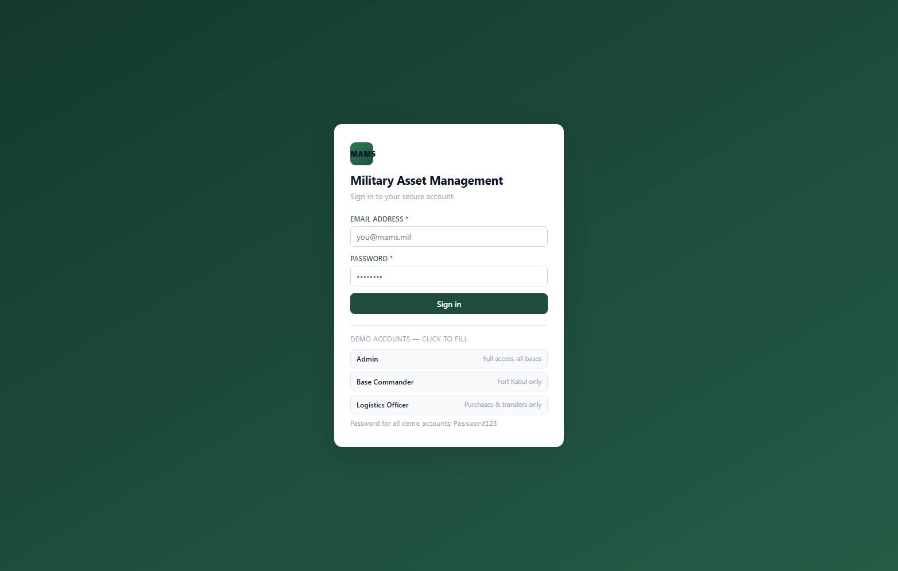
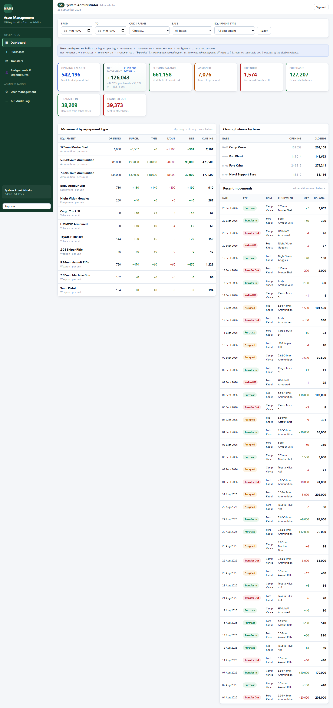
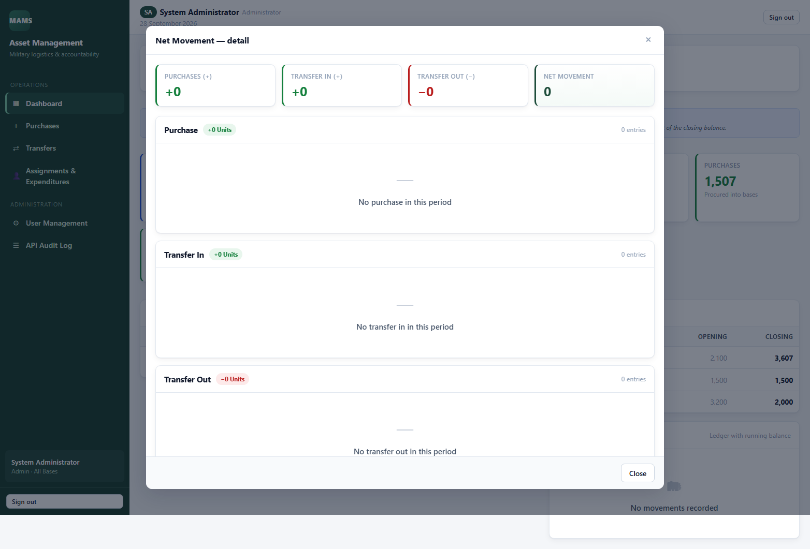
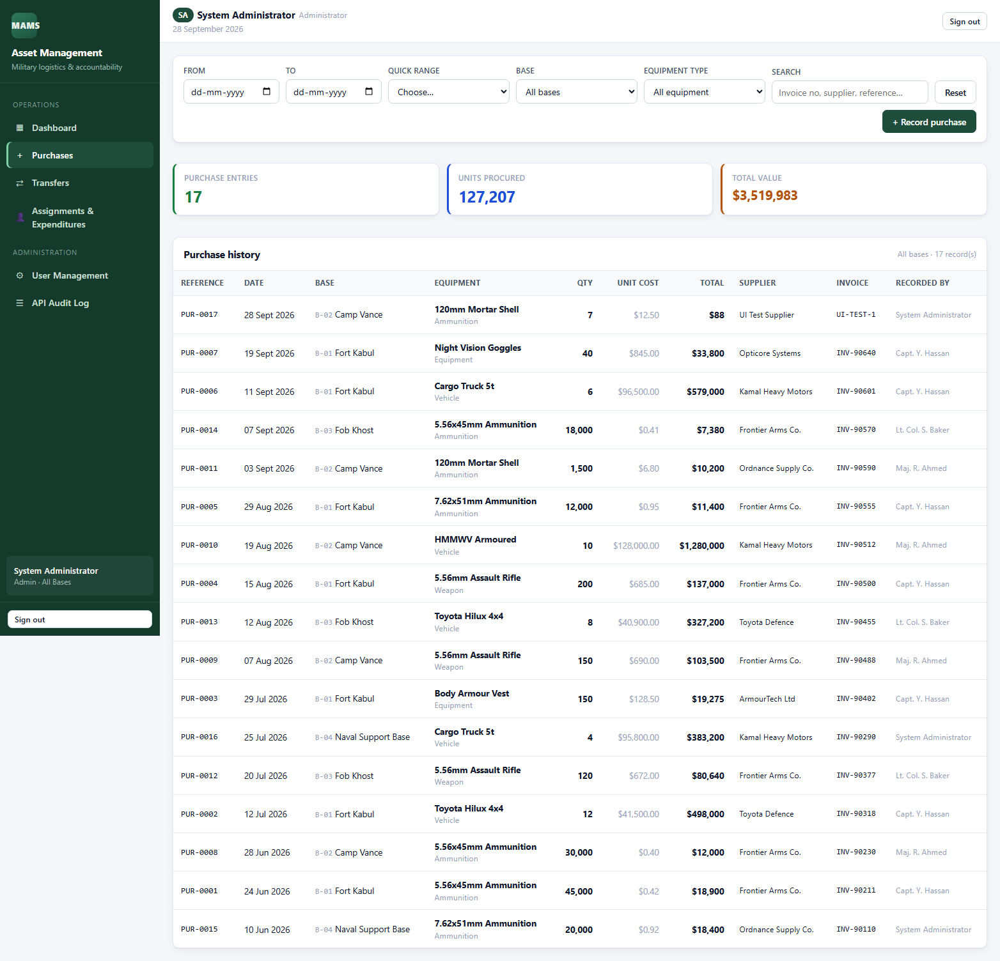
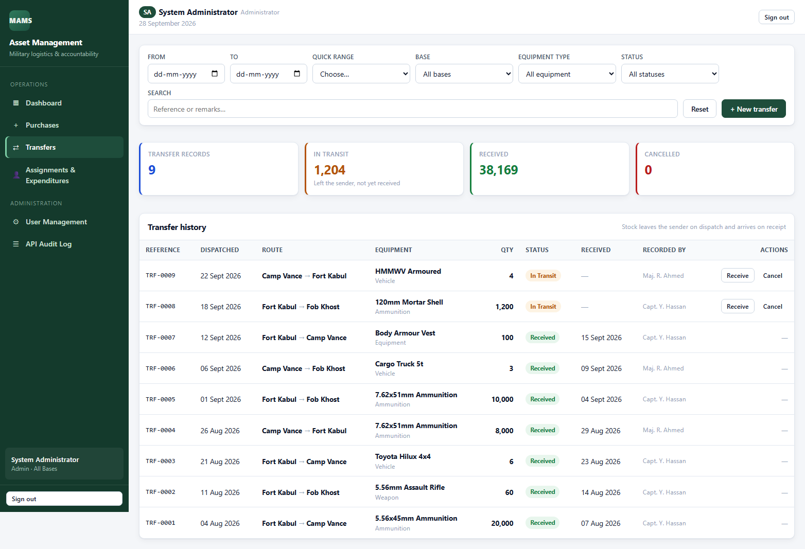
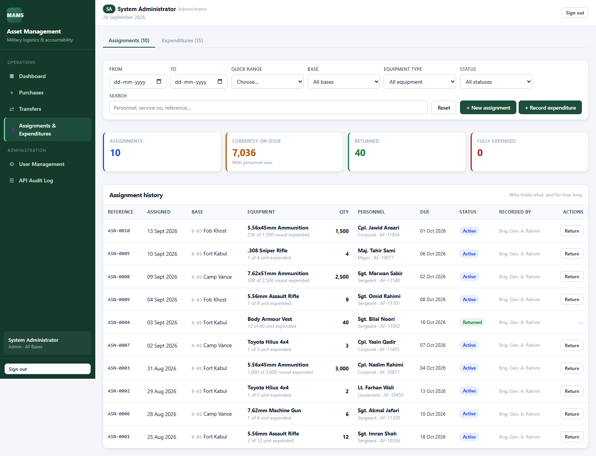
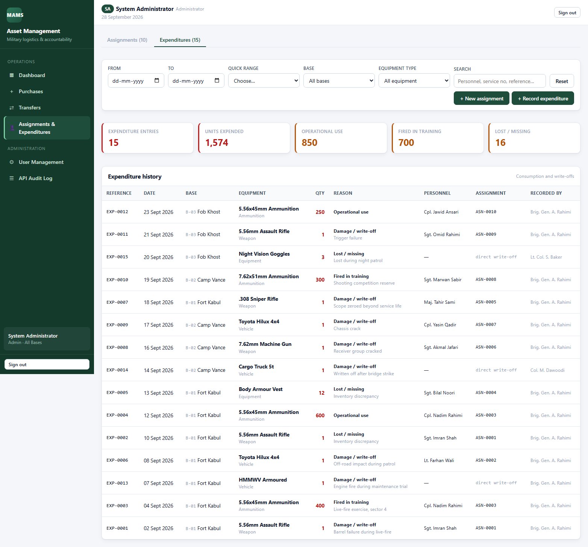
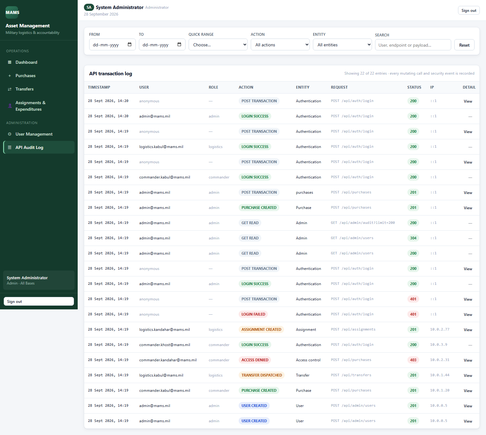
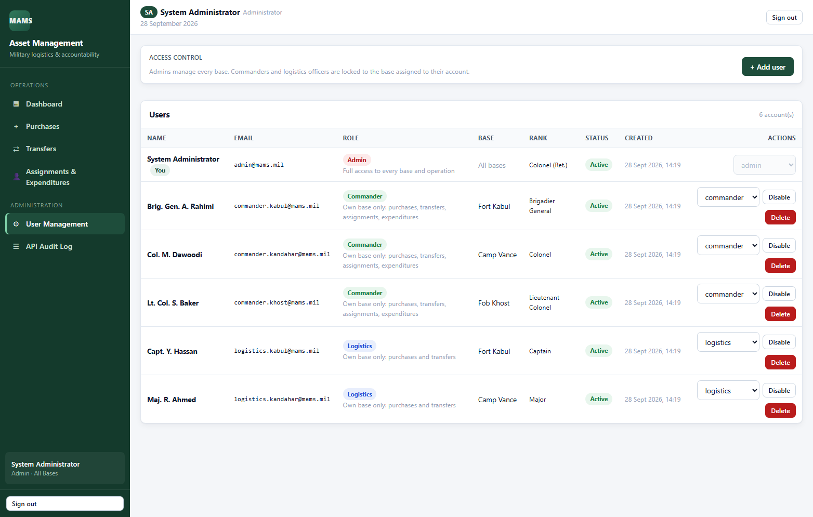
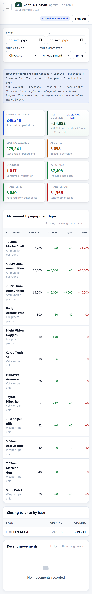
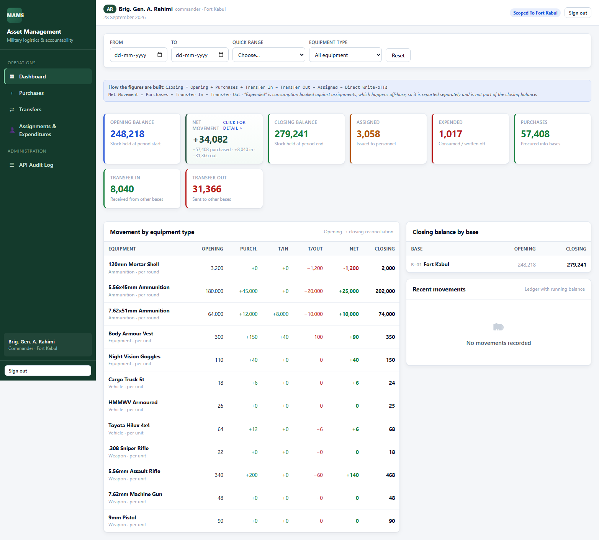
node -vcd backend
npm install
cp .env.example .env # Windows: copy .env.example .env
npm start
The database file backend/database/military_assets.db is created automatically and
populated with demo data on first run, so there is no separate migration or import step. Verify it
with http://localhost:4000/api/health, which should return
{"status":"ok"}.
cd frontend
npm install
cp .env.example .env # Windows: copy .env.example .env
npm run devOpen http://localhost:5173. Vite proxies /api to port 4000, so the browser talks to a single origin and CORS never enters the picture during development.
| Variable | Default | Description |
|---|---|---|
PORT | 4000 | Port the API listens on |
DB_FILE | database/military_assets.db | Path to the SQLite file, relative to backend/ |
JWT_SECRET | dev fallback | Must be set to a long random value in production |
JWT_EXPIRES_IN | 8h | Token lifetime |
CORS_ORIGIN | localhost:5173 | Comma-separated allowed origins in production |
VITE_API_URL | empty (use proxy) | Frontend only: absolute API base URL when deployed separately |
cd backend
npm run reset # wipe and re-seed the demo database
npm run dump # write deliverables/database/dump.sql
npm run smoke # re-seed, then run 77 API + RBAC assertions
cd ../frontend
npm run build # production bundle in dist/
node scripts/browser-check.js # 39 real-browser assertions
node scripts/screenshots.js # regenerate all screenshotssqlite3 military_assets.db < dump.sql
# or simply copy deliverables/database/military_assets.db into backend/database/All endpoints are prefixed with /api and speak JSON. Every route except POST /auth/login and GET /health requires the header Authorization: Bearer <token>.
| Method | Endpoint | Access | Description |
|---|---|---|---|
| GET | /health | public | Liveness probe used by the host platform. |
| POST | /auth/login | public | Body {email, password}. Returns {token, user}. Audited. |
| GET | /auth/me | any | Current user profile from the token. |
| GET | /meta/bases | any | List of bases — narrowed to the user's own base for non-admins. |
| GET | /meta/equipment-types | any | Equipment catalogue. |
| GET | /meta/permissions | any | Capabilities of the current role, used to render the UI. |
| Method | Endpoint | Description |
|---|---|---|
| GET | /dashboard/summary | All KPI totals for the selected window, with per-equipment and per-base breakdowns. Accepts from, to, baseId, equipmentTypeId. |
| GET | /dashboard/net-movement | Pop-up drill-down. The individual purchases, transfer-ins and transfer-outs that make up the Net Movement figure. |
| GET | /dashboard/balances | Current stock for every base × equipment combination. |
| GET | /dashboard/movements | Ledger rows for the window with the running balance_after; accepts limit. |
| Method | Endpoint | Access | Description |
|---|---|---|---|
| GET | /purchases | any | History filtered by from, to, baseId, equipmentTypeId, free-text q. |
| GET | /purchases/summary | any | Document count, total units and total value for the same filters. |
| POST | /purchases | admin, commander, logistics | Records a purchase and posts a PURCHASE ledger entry. Rejects a base the user does not control. |
| Method | Endpoint | Access | Description |
|---|---|---|---|
| GET | /transfers | any | History where the user's base is either end of the route; status filter available. |
| POST | /transfers | admin, commander, logistics | Dispatch. Validates sufficient stock at the sender, then posts TRANSFER_OUT. |
| POST | /transfers/:id/receive | admin, commander, logistics | Confirms arrival at the destination and posts TRANSFER_IN there. |
| POST | /transfers/:id/cancel | admin, commander, logistics | Cancels an in-transit transfer, returning the stock to the sender. |
| Method | Endpoint | Access | Description |
|---|---|---|---|
| GET | /assignments | any | History with status filter; shows assigned, returned and expended quantities. |
| POST | /assignments | admin, commander | Issues assets to named personnel and posts ASSIGNMENT ledger entries. |
| POST | /assignments/:id/return | admin, commander | Returns the un-expended remainder to base stock. |
| GET | /expenditures | any | History with a reason filter. |
| POST | /expenditures | admin, commander | Records consumption against an assignment, or a direct write-off with a reason and remarks. |
| Method | Endpoint | Access | Description |
|---|---|---|---|
| GET | /admin/users | admin | List users. Password hashes are explicitly excluded from the query. |
| POST | /admin/users | admin | Create a user with a role and base. |
| PATCH | /admin/users/:id | admin | Change role, base assignment or active flag. |
| DELETE | /admin/users/:id | admin | Delete a user. |
| GET | /admin/audit | admin | Audit log filtered by action, entity, from, to, q. |
A single error handler converts anything thrown into a consistent JSON body,
{ "error": "message" }, with the correct status: 400 for validation
problems, 401 for missing or invalid tokens, 403 for role or base
violations, 404 for unknown records and routes, and 409 for
conflicts such as an insufficient stock balance or a duplicate reference number.
All demo accounts share the password Password123. They are seeded by
npm run seed and are listed on the login screen for one-click access.
| Password | Role | Base / scope | |
|---|---|---|---|
admin@mams.mil | Password123 | Admin | All bases — full access |
commander.kabul@mams.mil | Password123 | Base Commander | Fort Kabul (B-01) |
commander.kandahar@mams.mil | Password123 | Base Commander | Camp Vance (B-02) |
commander.khost@mams.mil | Password123 | Base Commander | Fob Khost (B-03) |
logistics.kabul@mams.mil | Password123 | Logistics Officer | Fort Kabul — purchases & transfers |
logistics.kandahar@mams.mil | Password123 | Logistics Officer | Camp Vance — purchases & transfers |
JWT_SECRET, and serve over HTTPS.
| Suite | Checks | Coverage |
|---|---|---|
API smoke suitebackend/scripts/smoke.js | 77 / 77 | Login and token handling, role and base scoping, the ledger identity and zero-negative-balance invariants, purchase/transfer/assignment/expenditure lifecycles, insufficient-stock rejection, admin user management, audit entries, and error responses. |
Browser suitefrontend/scripts/browser-check.js | 39 / 39 | Real Chrome via the DevTools Protocol: login and rejection of bad credentials, every page renders, forms open and validate, filters change the results, the Net Movement pop-up opens and closes, the admin-only page is hidden for other roles, mobile layout, and no console errors or failed network requests. |
Both suites exit non-zero on failure and print a pass/fail line, so they can be wired into CI directly. The verification is behavioural rather than cosmetic: the tests assert that a Logistics Officer is refused an assignment, that the dashboard figures equal the sum of the transaction pages, and that cancelling a transfer restores the sender's balance.
A render.yaml blueprint is included for the API, and vercel.json and
netlify.toml for the frontend, so the application can be pushed to a live URL
without modification. The frontend is a static build; the backend reads its port, database path
and allowed origins from the environment.
Backend → Render : rootDir=backend, buildCommand=npm install, startCommand=npm start,
healthCheckPath=/api/health
Frontend → Vercel : rootDir=frontend, buildCommand=npm run build, outputDirectory=dist
Frontend → Netlify : base directory=frontend, build=npm run build, publish=dist
environment: VITE_API_URL=https://<api-host>npm run reset between demonstrations.
The delivered system meets the specified requirements: it reports opening balance, closing balance and net movement; distinguishes purchases, transfers in and transfers out; tracks assigned and expended assets with named personnel; and enforces role-based access control that is verified by tests rather than assumed. Two additions go beyond the brief — the Net Movement pop-up that opens the headline figure down to individual transactions, and a responsive layout that makes the same application usable on a phone in the field.
The design choice that makes the reporting trustworthy is the single append-only ledger: because the dashboard is a projection of the transaction history rather than a separately maintained counter, the figures cannot drift apart from the records behind them. The main constraints on further work are the local-file database and the stateless token, both of which have a clear, contained upgrade path described in the limitations section.